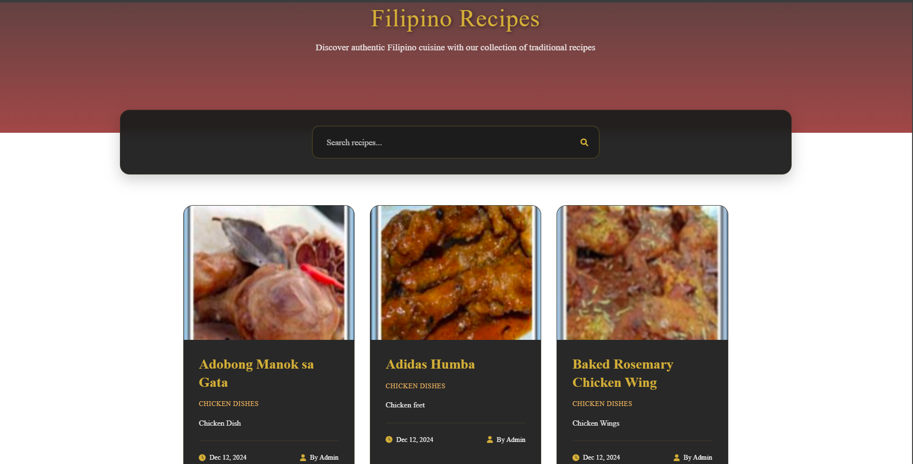
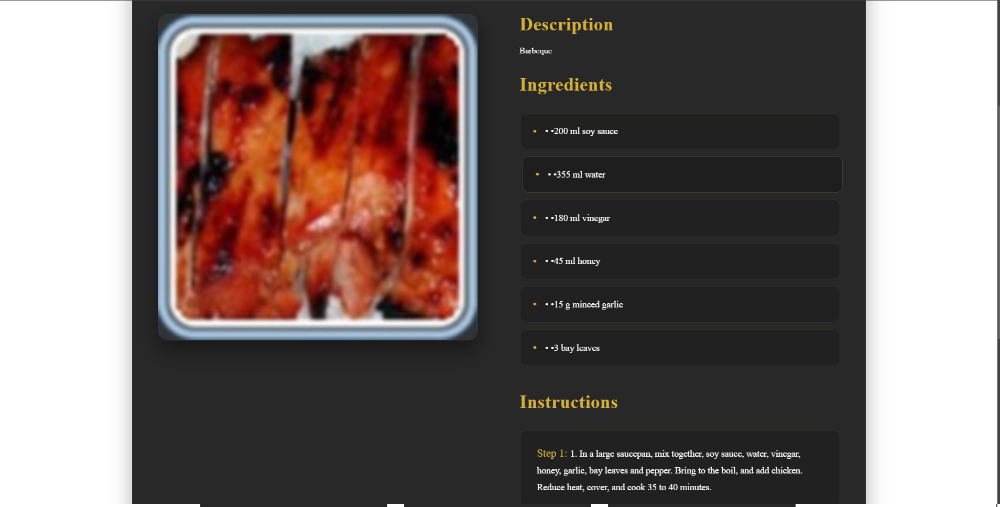

Filipino Cuisine Recipe
Project Overview
A comprehensive web-based recipe management system dedicated to preserving and sharing traditional Filipino cuisine. The platform allows administrators to curate authentic recipes while enabling users to explore and learn the art of Filipino cooking through detailed instructions and cultural insights.
Key Features
- Recipe Database
- Admin Management
- Recipe Search
- Step-by-Step Instructions
- Favorite Recipes
- Category System
- Recipe Images
Technical Stack
Node.js
JavaScript
MySQL
HTML5
CSS3